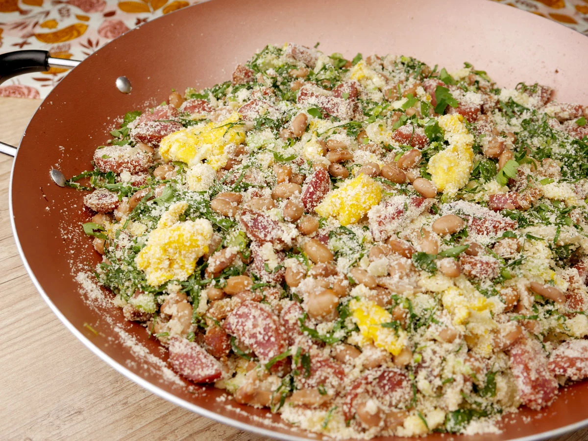

Tropeiro

If you like Brazilian food, this one is for you: Feijão Tropeiro.
A traditional dish from Minas Gerais.
Ingredients
- 1 pound dry carioca beans (substitute: pinto beans), rinsed *
- 2 bay leaves, dried or fresh
- 6 cups water
- 1 bunch collard greens, rinsed and dried
- 4 tablespoons olive oil, divided
- 14 ounces calabresa sausage, sliced
- 1/2 pound thick sliced bacon, diced
- 1 large onion, sliced
- 6 cloves of garlic, minced, divided
- 5 eggs
- 1 to 1 1/2 cups toasted manioc flour
- Salt and pepper to taste
- Chopped parsley and green onions to taste
Steps
- Start by cooking your beans. My preferred method is using a pressure cooker: combine the beans, bay leaves and water in your pot. Secure the lid and bring it to the stove, over high heat. When it reaches high pressure, reduce the heat to medium and cook for 20 minutes. Turn off the heat and allow the pot to cool down and release all the pressure naturally. When ready to open, unlock and remove the lid. Check if the beans are al dente. If not, cook them longer, in 5 minute increments.
- When the beans are done, drain all the water and reserve.
- Remove the stems of the collard greens leaves. Then, stack a few leaves on top of each other and roll that stack into a cylinder. Using a chef knife, slice the collard greens into thin strips. Repeat with all the leaves
- Place the oil in a medium-sized skillet and place it over medium heat. Whisk the eggs in a bowl and add them to the pan. Cook, stirring gently, until they are scrambled. Reserve.
- Heat 2 tablespoons of olive oil in a large saute pan over medium heat. Add 3 cloves of garlic and cook, stirring often, until golden and fragrant, about 2 minutes. Add the collard greens and cook until withered, about 5 minutes. Season with salt and pepper and reserve.
- Using that same pan, over medium heat, heat 1 tablespoon of olive oil and brown the sausage until it starts to get crispy, about 5 minutes. Remove from the pan and reserve. Discard the fat.
- In the same pan, add the bacon and fry until golden brown, about 3 minutes. Then, stir in the onions and remaining garlic, cooking until translucent (about 3 more minutes). Add the drained beans and the sausage and cook for a minute, letting the beans soak up all those amazing flavors. Then, add the eggs and the collard greens, stirring until everything is well combined. Season generoulsy with salt and pepper. Then, add the manioc flour (to taste), a handful at a time, stirring until it is moist and incorporated into the dish.
- Remove the pan from the heat and sprinkle the parsley and green onions.
- Serve immediately!